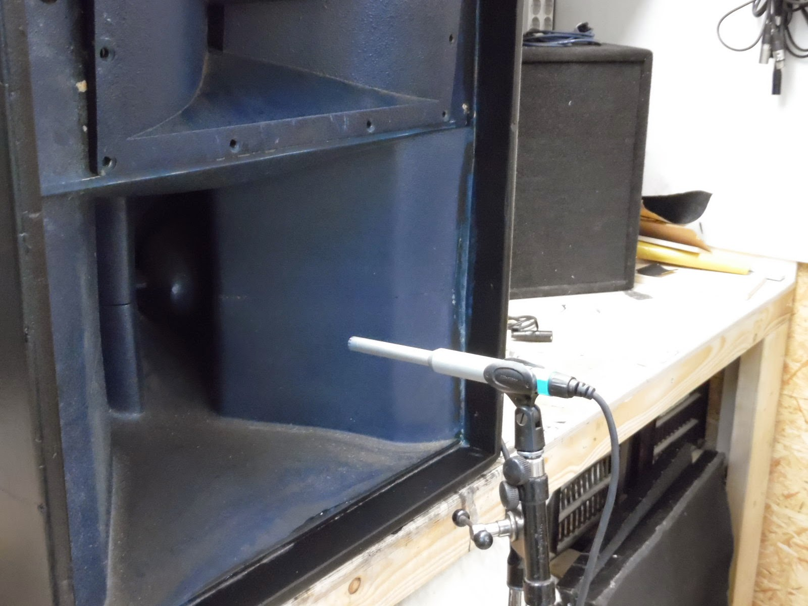

X-over Setup
Measurement, phase and crossover setup notes. 4 notes.
 X-over Setup
X-over SetupMagnitude + Phase ... Bodeplots
On the bench is a measurement screen with magnitude on top and phase below, and a question that still trips people up: why do we need both? Some 150 years ago a couple of brilliant guys like Fourier, Hertz and Helmholtz…
 X-over Setup
X-over SetupMeasuring and adjusting a X-over
On the bench is a 12-inch horn-loaded cabinet, a measurement mic and a dual-FFT rig. The target is a 1600 Hz, 24 dB Linkwitz-Riley acoustic crossover, and the first question is whether the electrical filter alone gets…
 X-over Setup
X-over SetupValid dual FFT measurement
On the bench is a measurement laptop with Smaart open, a mic on a stand and a mid speaker in a closed box. The delay finder is snapped to the loudest part of the impulse response, and that is exactly the problem. On…

X-over SetupDual FFT analyzers..how to use SMAART
On the bench is a laptop running Smaart, a reference signal and a measurement mic in front of an old Axys T89 cabinet. The screen shows magnitude, phase and coherence, and the white noise is about to go off. Now we know…